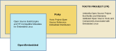

1 Introducing the Yocto Project
1.1 What is the Yocto Project?
The Yocto Project is an open source collaboration project that helps developers create custom Linux-based systems that are designed for embedded products regardless of the product's hardware architecture. Yocto Project provides a flexible toolset and a development environment that allows embedded device developers across the world to collaborate through shared technologies, software stacks, configurations, and best practices used to create these tailored Linux images.
Thousands of developers worldwide have discovered that Yocto Project provides advantages in both systems and applications development, archival and management benefits, and customizations used for speed, footprint, and memory utilization. The project is a standard when it comes to delivering embedded software stacks. The project allows software customizations and build interchange for multiple hardware platforms as well as software stacks that can be maintained and scaled.


The remainder of this section overviews advantages and challenges tied to the Yocto Project.
1.1.1 Features
Here are features and advantages of the Yocto Project:
Widely Adopted Across the Industry: Many semiconductor, operating system, software, and service vendors adopt and support the Yocto Project in their products and services. For a look at the Yocto Project community and the companies involved with the Yocto Project, see the "COMMUNITY" and "ABOUT" tabs on the Yocto Project home page.
Architecture Agnostic: Yocto Project supports Intel, ARM, MIPS, AMD, PPC, RISC-V and other architectures. Most Original Design Manufacturers (ODMs), Operating System Vendors (OSVs), and chip vendors create and supply BSPs that support their hardware. If you have custom silicon, you can create a BSP that supports that architecture. See Yocto Project Supported Architectures And Features for details on the level of support for some of these architectures.
Aside from broad architecture support, the Yocto Project fully supports a wide range of devices emulated by the Quick EMUlator (QEMU).
Images and Code Transfer Easily: Yocto Project output can easily move between architectures without moving to new development environments. Additionally, if you have used the Yocto Project to create an image or application and you find yourself not able to support it, commercial Linux vendors listed on https://www.yoctoproject.org/members/ and https://www.yoctoproject.org/about/participants/ could take it and provide ongoing support.
Flexibility: Corporations use the Yocto Project many different ways. One example is to create an internal Linux distribution as a code base the corporation can use across multiple product groups. Through customization and layering, a project group can leverage the base Linux distribution to create a distribution that works for their product needs.
Ideal for Constrained Embedded and IoT devices: Unlike a full Linux distribution, you can use the Yocto Project to create exactly what you need for embedded devices. You only add the feature support or packages that you absolutely need for the device. For devices that have display hardware, you can use available system components such as X11, Wayland, GTK+, Qt, Clutter, and SDL (among others) to create a rich user experience. For devices that do not have a display or where you want to use alternative UI frameworks, you can choose to not build these components.
Comprehensive Toolchain Capabilities: Toolchains for supported architectures satisfy most use cases. However, if your hardware supports features that are not part of a standard toolchain, you can easily customize that toolchain through specification of platform-specific tuning parameters. And, should you need to use a third-party toolchain, mechanisms built into the Yocto Project allow for that.
Mechanism Rules Over Policy: Focusing on mechanism rather than policy ensures that you are free to set policies based on the needs of your design instead of adopting decisions enforced by some system software provider.
Uses a Layer Model: The Yocto Project layer infrastructure groups related functionality into separate bundles. You can incrementally add these grouped functionalities to your project as needed. Using layers to isolate and group functionality reduces project complexity and redundancy, allows you to easily extend the system, make customizations, and keep functionality organized.
Supports Partial Builds: You can build and rebuild individual packages as needed. Yocto Project accomplishes this through its Shared State Cache (sstate) scheme. Being able to build and debug components individually eases project development.
Releases According to a Strict Schedule: Major releases occur on a six-month cycle predictably in October and April. The most recent two releases support point releases to address common vulnerabilities and exposures. This predictability is crucial for projects based on the Yocto Project and allows development teams to plan activities.
Rich Ecosystem of Individuals and Organizations: For open source projects, the value of community is very important. Support forums, expertise, and active developers who continue to push the Yocto Project forward are readily available.
Binary Reproducibility: The Yocto Project allows you to be very specific about dependencies and achieves very high percentages of binary reproducibility (e.g. 99.8% for
core-image-minimal). When distributions are not specific about which packages are pulled in and in what order to support dependencies, other build systems can arbitrarily include packages.License Manifest: The Yocto Project provides a license manifest for review by people who need to track the use of open source licenses (e.g. legal teams).
1.1.2 Challenges
Here are challenges you might encounter when developing using the Yocto Project:
Steep Learning Curve: The Yocto Project has a steep learning curve and has many different ways to accomplish similar tasks. It can be difficult to choose between such ways.
Understanding What Changes You Need to Make For Your Design Requires Some Research: Beyond the simple tutorial stage, understanding what changes need to be made for your particular design can require a significant amount of research and investigation. For information that helps you transition from trying out the Yocto Project to using it for your project, see the "What I wish I'd known about Yocto Project" and "Transitioning to a custom environment for systems development" documents on the Yocto Project website.
Project Workflow Could Be Confusing: The Yocto Project workflow could be confusing if you are used to traditional desktop and server software development. In a desktop development environment, there are mechanisms to easily pull and install new packages, which are typically pre-compiled binaries from servers accessible over the Internet. Using the Yocto Project, you must modify your configuration and rebuild to add additional packages.
Working in a Cross-Build Environment Can Feel Unfamiliar: When developing code to run on a target, compilation, execution, and testing done on the actual target can be faster than running a BitBake build on a development host and then deploying binaries to the target for test. While the Yocto Project does support development tools on the target, the additional step of integrating your changes back into the Yocto Project build environment would be required. Yocto Project supports an intermediate approach that involves making changes on the development system within the BitBake environment and then deploying only the updated packages to the target.
The Yocto Project OpenEmbedded Build System produces packages in standard formats (i.e. RPM, DEB and/or IPK). If you included runtime package management in your image, you can deploy these packages into the running system on the target by using the corresponding utilities on the target such as
rpm/dnf,dpkg/aptoropkg.Initial Build Times Can be Significant: Long initial build times are unfortunately unavoidable due to the large number of packages initially built from scratch for a fully functioning Linux system. Once that initial build is completed, however, the shared-state (sstate) cache mechanism Yocto Project uses keeps the system from rebuilding packages that have not been "touched" since the last build. The sstate mechanism significantly reduces times for successive builds.
1.2 The Yocto Project Layer Model
The Yocto Project's "Layer Model" is a development model for embedded and IoT Linux creation that distinguishes the Yocto Project from other simple build systems. The Layer Model simultaneously supports collaboration and customization. Layers are repositories that contain related sets of instructions that tell the OpenEmbedded Build System what to do. You can collaborate, share, and reuse layers.
Layers can contain changes to previous instructions or settings at any time. This powerful override capability is what allows you to customize previously supplied collaborative or community layers to suit your product requirements.
You use different layers to logically separate information in your build. As an example, you could have BSP, GUI, distro configuration, middleware, or application layers. Putting your entire build into one layer limits and complicates future customization and reuse. Isolating information into layers, on the other hand, helps simplify future customizations and reuse. You might find it tempting to keep everything in one layer when working on a single project. However, the more modular your Metadata, the easier it is to cope with future changes.
Nota
Use Board Support Package (BSP) layers from silicon vendors when possible.
Familiarize yourself with the Yocto Project Compatible Layers or the OpenEmbedded Layer Index. The latter contains more layers but they are less universally validated.
Layers support the inclusion of technologies, hardware components, and software components. The Yocto Project Compatible designation provides a minimum level of standardization that contributes to a strong ecosystem. "YP Compatible" is applied to appropriate products and software components such as BSPs, other OE-compatible layers, and related open-source projects, allowing the producer to use Yocto Project badges and branding assets.
To illustrate how layers are used to keep things modular, consider
machine customizations. These types of customizations typically reside
in a special layer, rather than a general layer, called a BSP Layer.
Furthermore, the machine customizations should be isolated from recipes
and Metadata that support a new GUI environment, for example. This
situation gives you a couple of layers: one for the machine
configurations, and one for the GUI environment. It is important to
understand, however, that the BSP layer can still make machine-specific
additions to recipes within the GUI environment layer without polluting
the GUI layer itself with those machine-specific changes. You can
accomplish this through a recipe that is a BitBake append
(.bbappend) file, which is described later in this section.
Nota
For general information on BSP layer structure, see the Yocto Project Board Support Package (BSP) Manual.
The Source Directory
contains both general layers and BSP layers right out of the box. You
can easily identify layers that ship with a Yocto Project release in the
Source Directory by their names. Layers typically have names that begin
with the string meta-.
Nota
It is not a requirement that a layer name begin with the prefix
meta-, but it is a commonly accepted standard in the Yocto Project
community.
For example, if you were to examine the tree view
of the openembedded-core repository, you will see several layers: meta,
meta-skeleton, and meta-selftest. Each of these repositories represents a distinct
layer.
For procedures on how to create layers, see the "Understanding and Creating Layers" section in the Yocto Project Development Tasks Manual.
1.3 Components and Tools
The Yocto Project employs a collection of components and tools used by the project itself, by project developers, and by those using the Yocto Project. These components and tools are open source projects and metadata that are separate from the reference distribution (Poky) and the OpenEmbedded Build System. Most of the components and tools are downloaded separately.
This section provides brief overviews of the components and tools associated with the Yocto Project.
1.3.1 Development Tools
Here are tools that help you develop images and applications using the Yocto Project:
devtool: This command-line tool is available as part of the extensible SDK (eSDK) and is its cornerstone. You can use
devtoolto help build, test, and package software within the eSDK. You can use the tool to optionally integrate what you build into an image built by the OpenEmbedded build system.The
devtoolcommand employs a number of sub-commands that allow you to add, modify, and upgrade recipes. As with the OpenEmbedded build system, "recipes" represent software packages withindevtool. When you usedevtool add, a recipe is automatically created. When you usedevtool modify, the specified existing recipe is used in order to determine where to get the source code and how to patch it. In both cases, an environment is set up so that when you build the recipe a source tree that is under your control is used in order to allow you to make changes to the source as desired. By default, both new recipes and the source go into a "workspace" directory under the eSDK. Thedevtool upgradecommand updates an existing recipe so that you can build it for an updated set of source files.You can read about the
devtoolworkflow in the Yocto Project Application Development and Extensible Software Development Kit (eSDK) Manual in the "Using devtool in Your SDK Workflow" section.Extensible Software Development Kit (eSDK): The eSDK provides a cross-development toolchain and libraries tailored to the contents of a specific image. The eSDK makes it easy to add new applications and libraries to an image, modify the source for an existing component, test changes on the target hardware, and integrate into the rest of the OpenEmbedded build system. The eSDK gives you a toolchain experience supplemented with the powerful set of
devtoolcommands tailored for the Yocto Project environment.For information on the eSDK, see the Yocto Project Application Development and Software Development Kits (SDK/eSDK) Manual Manual.
Toaster: Toaster is a web interface to the Yocto Project OpenEmbedded build system. Toaster allows you to configure, run, and view information about builds. For information on Toaster, see the Toaster User Manual.
VSCode IDE Extension: The Yocto Project BitBake extension for Visual Studio Code provides a rich set of features for working with BitBake recipes. The extension provides syntax highlighting, hover tips, and completion for BitBake files as well as embedded Python and Bash languages. Additional views and commands allow you to efficiently browse, build and edit recipes. It also provides SDK integration for cross-compiling and debugging through
devtool.Learn more about the VSCode Extension on the extension's frontpage.
1.3.2 Production Tools
Here are tools that help with production related activities using the Yocto Project:
Auto Upgrade Helper: This utility when used in conjunction with the OpenEmbedded Build System (BitBake and OE-Core) automatically generates upgrades for recipes that are based on new versions of the recipes published upstream. See Using the Auto Upgrade Helper (AUH) for how to set it up.
Recipe Reporting System: The Recipe Reporting System tracks recipe versions available for Yocto Project. The main purpose of the system is to help you manage the recipes you maintain and to offer a dynamic overview of the project. The Recipe Reporting System is built on top of the OpenEmbedded Layer Index, which is a website that indexes OpenEmbedded-Core layers.
Patchwork: Patchwork is a fork of a project originally started by OzLabs. The project is a web-based tracking system designed to streamline the process of bringing contributions into a project. The Yocto Project uses Patchwork as an organizational tool to handle patches, which number in the thousands for every release.
AutoBuilder: AutoBuilder is a project that automates build tests and quality assurance (QA). By using the public AutoBuilder, anyone can determine the status of the current development branch of the core repositories (OpenEmbedded-Core (OE-Core) and BitBake).
Nota
AutoBuilder is based on buildbot.
A goal of the Yocto Project is to lead the open source industry with a project that automates testing and QA procedures. In doing so, the project encourages a development community that publishes QA and test plans, publicly demonstrates QA and test plans, and encourages development of tools that automate and test and QA procedures for the benefit of the development community.
You can learn more about the AutoBuilder used by the Yocto Project Autobuilder here.
Pseudo: Pseudo is the Yocto Project implementation of fakeroot, which is used to run commands in an environment that seemingly has root privileges.
During a build, it can be necessary to perform operations that require system administrator privileges. For example, file ownership or permissions might need to be defined. Pseudo is a tool that you can either use directly or through the environment variable
LD_PRELOAD. Either method allows these operations to succeed even without system administrator privileges.Thanks to Pseudo, the Yocto Project never needs root privileges to build images for your target system.
You can read more about Pseudo in the "Fakeroot and Pseudo" section.
1.3.3 Open-Embedded Build System Components
Here are components associated with the OpenEmbedded Build System:
BitBake: BitBake is a core component of the Yocto Project and is used by the OpenEmbedded build system to build images. While BitBake is key to the build system, BitBake is maintained separately from the Yocto Project.
BitBake is a generic task execution engine that allows shell and Python tasks to be run efficiently and in parallel while working within complex inter-task dependency constraints. In short, BitBake is a build engine that works through recipes written in a specific format in order to perform sets of tasks.
You can learn more about BitBake in the BitBake User Manual.
OpenEmbedded-Core: OpenEmbedded-Core (OE-Core) is a common layer of metadata (i.e. recipes, classes, and associated files) used by OpenEmbedded-derived systems, which includes the Yocto Project. The Yocto Project and the OpenEmbedded Project both maintain the OpenEmbedded-Core. You can find the OE-Core metadata in the OpenEmbedded Source Repositories.
Historically, the Yocto Project integrated the OE-Core metadata throughout the Yocto Project source repository reference system (Poky). After Yocto Project Version 1.0, the Yocto Project and OpenEmbedded agreed to work together and share a common core set of metadata (OE-Core), which contained much of the functionality previously found in Poky. This collaboration achieved a long-standing OpenEmbedded objective for having a more tightly controlled and quality-assured core. The results also fit well with the Yocto Project objective of achieving a smaller number of fully featured tools as compared to many different ones.
Nowadays, the Poky repository is no longer updated as bitbake-setup became the preferred way of setting up the repositories in order to build the Poky distro.
1.3.4 Packages for Finished Targets
Here are components associated with packages for finished targets:
Matchbox: Matchbox is an Open Source, base environment for the X Window System running on non-desktop, embedded platforms such as handhelds, set-top boxes, kiosks, and anything else for which screen space, input mechanisms, or system resources are limited.
Matchbox consists of a number of interchangeable and optional applications that you can tailor to a specific, non-desktop platform to enhance usability in constrained environments.
You can find the Matchbox source in the Yocto Project Source Repositories.
Opkg: Open PacKaGe management (opkg) is a lightweight package management system based on the itsy package (ipkg) management system. Opkg is written in C and resembles Advanced Package Tool (APT) and Debian Package (dpkg) in operation.
Opkg is intended for use on embedded Linux devices and is used in this capacity in the OpenEmbedded and OpenWrt projects, as well as the Yocto Project.
Nota
As best it can, opkg maintains backwards compatibility with ipkg and conforms to a subset of Debian's policy manual regarding control files.
You can find the opkg source in the Yocto Project Source Repositories.
1.3.5 Archived Components
The Build Appliance is a virtual machine image that enables you to build and boot a custom embedded Linux image with the Yocto Project using a non-Linux development system.
Historically, the Build Appliance was the second of three methods by which you could use the Yocto Project on a system that was not native to Linux.
Hob: Hob, which is now deprecated and is no longer available since the 2.1 release of the Yocto Project provided a rudimentary, GUI-based interface to the Yocto Project. Toaster has fully replaced Hob.
Build Appliance: Post Hob, the Build Appliance became available. It was never recommended that you use the Build Appliance as a day-to-day production development environment with the Yocto Project. Build Appliance was useful as a way to try out development in the Yocto Project environment.
CROPS: Used to be a solution available for developing using the Yocto Project on a system not native to Linux (see https://github.com/crops/poky-container).
1.4 Development Methods
The Yocto Project development environment usually involves a Build Host and target hardware. You use the Build Host to build images and develop applications, while you use the target hardware to execute deployed software.
This section provides an introduction to the choices or development methods you have when setting up your Build Host. Depending on your particular workflow preference and the type of operating system your Build Host runs, you have several choices.
Nota
For additional detail about the Yocto Project development environment, see the "The Yocto Project Development Environment" chapter.
Native Linux Host: By far the best option for a Build Host. A system running Linux as its native operating system allows you to develop software by directly using the BitBake tool. You can accomplish all aspects of development from a regular shell in a supported Linux distribution.
For information on how to set up a Build Host on a system running Linux as its native operating system, see the "Setting Up a Native Linux Host" section in the Yocto Project Development Tasks Manual.
OCI Containers: Typically, you use an OCI container (with Docker or Podman for example), to set up a Build Host that is not running Linux (e.g. Microsoft Windows or macOS).
Windows Subsystem For Linux (WSL 2): You may use Windows Subsystem For Linux version 2 to set up a Build Host using Windows 10 or later, or Windows Server 2019 or later.
The Windows Subsystem For Linux allows Windows to run a real Linux kernel inside of a lightweight virtual machine (VM).
For information on how to set up a Build Host with WSL 2, see the "Setting Up to Use Windows Subsystem For Linux (WSL 2)" section in the Yocto Project Development Tasks Manual.
Toaster: Regardless of what your Build Host is running, you can use Toaster to develop software using the Yocto Project. Toaster is a web interface to the Yocto Project's OpenEmbedded Build System. The interface allows you to configure and run your builds. Information about builds is collected and stored in a database. You can use Toaster to configure and start builds on multiple remote build servers.
For information about and how to use Toaster, see the Toaster User Manual.
Using the VSCode Extension: You can use the Yocto Project BitBake extension for Visual Studio Code to start your BitBake builds through a graphical user interface.
Learn more about the VSCode Extension on the extension's marketplace page
1.5 Reference Embedded Distribution (Poky)
"Poky", which is pronounced Pock-ee, is the name of the Yocto Project's reference distribution or Reference OS Kit. This reference distribution is represented by a DISTRO configuration file found in meta-poky.
Avvertimento
While Poky is a "complete" distribution specification and is tested and put through QA, you cannot use it as a product "out of the box" in its current form.
Poky has a regular, well established, six-month release cycle detailed in the Yocto Project Releases and the Stable Release Process of the Yocto Project Reference Manual.
1.6 The OpenEmbedded Build System Workflow
The OpenEmbedded Build System uses a "workflow" to accomplish image and SDK generation. The following figure overviews that workflow:

Here is a brief summary of the "workflow":
Developers specify architecture, policies, patches and configuration details.
The build system fetches and downloads the source code from the specified location. The build system supports standard methods such as tarballs or source code repositories systems such as Git.
Once source code is downloaded, the build system extracts the sources into a local work area where patches are applied and common steps for configuring and compiling the software are run.
The build system then installs the software into a temporary staging area where the binary package format you select (DEB, RPM, or IPK) is used to roll up the software.
Different QA and sanity checks run throughout entire build process.
After the binaries are created, the build system generates a binary package feed that is used to create the final root file image.
The build system generates the file system image and a customized SDK (Software Development Kit) for application development in parallel.
For a very detailed look at this workflow, see the "OpenEmbedded Build System Concepts" section.
1.7 Some Basic Terms
It helps to understand some basic fundamental terms when learning the Yocto Project. Although there is a list of terms in the "Yocto Project Terms" section of the Yocto Project Reference Manual, this section provides the definitions of some terms helpful for getting started:
Configuration Files: Files that hold global definitions of variables, user-defined variables, and hardware configuration information. These files tell the OpenEmbedded Build System what to build and what to put into the image to support a particular platform.
Extensible Software Development Kit (eSDK): A custom SDK for application developers. This eSDK allows developers to incorporate their library and programming changes back into the image to make their code available to other application developers. For information on the eSDK, see the Yocto Project Application Development and Software Development Kits (SDK/eSDK) Manual manual.
Layer: A collection of related metadata, which could include any of recipes, machine configuration files, distro configuration files and/or class files. Layers allow you to consolidate related metadata to customize your build. Layers also isolate information used when building for multiple architectures. Layers are hierarchical in their ability to override previous specifications. You can include any number of available layers from the Yocto Project and customize the build by adding your own layers after them. You can search the Layer Index for layers used within Yocto Project.
For more detailed information on layers, see the "Understanding and Creating Layers" section in the Yocto Project Development Tasks Manual. For a discussion specifically on BSP Layers, see the "BSP Layers" section in the Yocto Project Board Support Packages (BSP) Developer's Guide.
Metadata: A key element of the Yocto Project is the Metadata that is used to construct a Linux distribution and is contained in the files that the OpenEmbedded build system parses when building an image. In general, Metadata includes recipes, configuration files, and other information that refers to the build instructions themselves, as well as the data used to control what things get built and the effects of the build. Metadata also includes commands and data used to indicate what versions of software are used, from where they are obtained, and changes or additions to the software itself (patches or auxiliary files) that are used to fix bugs or customize the software for use in a particular situation. OpenEmbedded-Core is an important set of validated metadata.
OpenEmbedded Build System: The terms "BitBake" and "build system" are sometimes used for the OpenEmbedded Build System.
BitBake is a task scheduler and execution engine that parses instructions (i.e. recipes) and configuration data. After a parsing phase, BitBake creates a dependency tree to order the compilation, schedules the compilation of the included code, and finally executes the building of the specified custom Linux image (distribution). BitBake is similar to the
maketool.During a build process, the build system tracks dependencies and performs a native or cross-compilation of each package. As a first step in a cross-build setup, the framework attempts to create a cross-compiler toolchain (i.e. Extensible SDK) suited for the target platform.
OpenEmbedded-Core (OE-Core): OE-Core is metadata comprised of foundation recipes, classes, and associated files that are meant to be common among many different OpenEmbedded-derived systems, including the Yocto Project. OE-Core is a curated subset of an original repository developed by the OpenEmbedded community that has been pared down into a smaller, core set of continuously validated recipes. The result is a tightly controlled and quality-assured core set of recipes.
You can see the Metadata in the
metadirectory of the Yocto Project Source Repositories.Packages: In the context of the Yocto Project, this term refers to a recipe's packaged output produced by BitBake (i.e. a "baked recipe"). A package is generally the compiled binaries produced from the recipe's sources. You "bake" something by running it through BitBake.
It is worth noting that the term "package" can, in general, have subtle meanings. For example, the packages referred to in the "Required Packages for the Build Host" section in the Yocto Project Reference Manual are compiled binaries that, when installed, add functionality to your host Linux distribution.
Another point worth noting is that historically within the Yocto Project, recipes were referred to as packages --- thus, the existence of several BitBake variables that are seemingly mis-named, (e.g. PR, PV, and PE).
Poky: Poky is a reference embedded distribution and a reference test configuration. Poky provides the following:
A base-level functional distro (DISTRO) used to illustrate how to customize a distribution.
A means by which to test the Yocto Project components (i.e. Poky is used to validate the Yocto Project).
Poky is not a product level distro. Rather, it is a good starting point for customization.
Recipe: The most common form of metadata. A recipe contains a list of settings and tasks (i.e. instructions) for building packages that are then used to build the binary image. A recipe describes where you get source code and which patches to apply. Recipes describe dependencies for libraries or for other recipes as well as configuration and compilation options. Related recipes are consolidated into a layer.